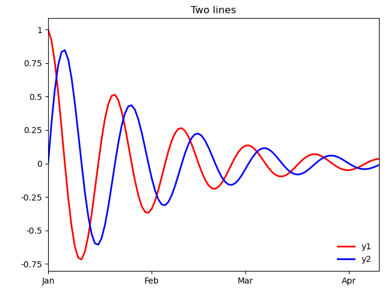

Note
Click here to download the full example code
Line plot¶
Out:
<Figure size 640x480 with 1 Axes>
import pygeode as pyg, numpy as np
import pylab as pyl
t = pyg.ModelTime365(values = np.arange(100), units='days', startdate=dict(year=1, month=1))
y1 = pyg.exp(-t / 30.) * pyg.cos(2*np.pi * t / 20.)
y2 = pyg.exp(-t / 30.) * pyg.sin(2*np.pi * t / 20.)
y1 = y1.rename('y1')
y2 = y2.rename('y2')
pyl.ioff()
ax = pyg.plot.AxesWrapper()
pyg.vplot(y1, label='y1', c='r', lw=2, axes=ax)
pyg.vplot(y2, label='y2', c='b', lw=2, axes=ax)
ax.setp(title = 'Two lines', ylabel='')
ax.setp_xaxis(major_formatter=pyg.timeticker.TimeFormatter(t, '$b'))
ax.legend(loc='lower right', frameon=False)
pyl.ion()
ax.render(1)